Food List
-
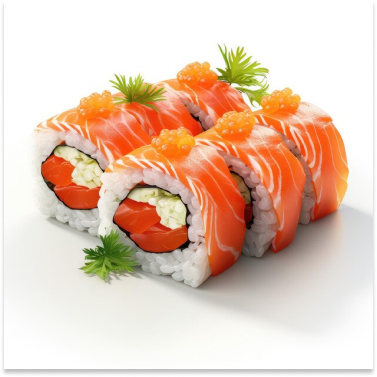
is a traditional Japanese dish made with vinegared rice, typically seasoned with sugar and salt, and combined with a variety of ingredients, such as seafood, vegetables,
Name: Sushi
Price: 15$
-
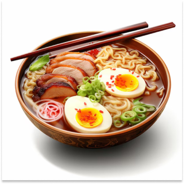
is a Japanese noodle dish. It includes Chinese-style wheat noodles served in a broth. Common flavors are soy sauce and miso, with typical toppings including sliced pork, nori, menma, and scallions. Ramen has its roots in Chinese noodle dishes and is a part of Japanese Chinese cuisine.
Name: Ramen
Price: 12$
-
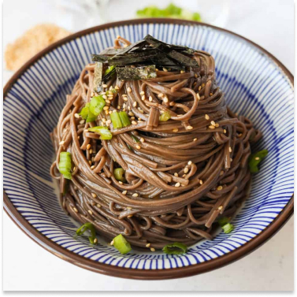
are Japanese noodles made primarily from buckwheat flour, with a small amount of wheat flour mixed in. It has an ashen brown color, and a slightly grainy texture. The noodles are served either chilled with a dipping sauce, or hot in a noodle soup.
Name: Soba
Price: 8$
-
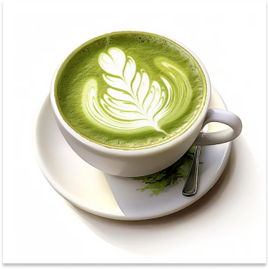
is a finely ground powder of green tea specially processed from shade-grown tea leaves. Shade growing gives matcha its characteristic bright green color and strong umami flavor. Matcha is typically consumed suspended in hot water.
Name: Matcha
Price: 5$
-
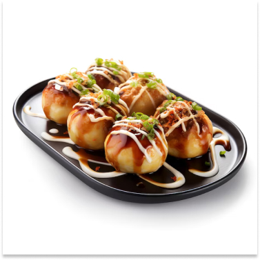
is a ball-shaped Japanese snack made of a wheat flour-based batter and cooked in a special molded pan. It is typically filled with minced or diced octopus, tempura scraps, pickled ginger, and green onion. The balls are brushed with takoyaki sauce and mayonnaise.
Name: Takoyaki
Price: 8$
-
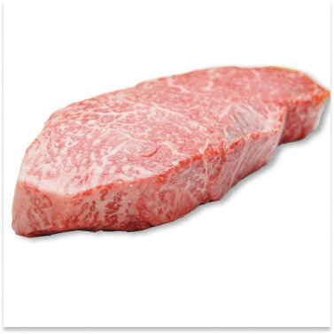
is the collective name for the four principal Japanese breeds of beef cattle. All wagyū cattle originate from early twentieth-century cross-breeding between native Japanese cattle and imported stock, mostly from Europe.
Name: Wagyu Steak
Price: 50$
-
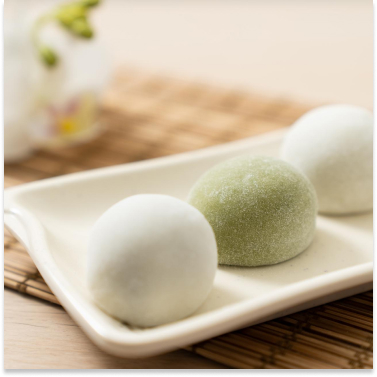
is a Japanese rice cake made of mochigome, a short-grain japonica glutinous rice, and sometimes other ingredients such as water, sugar, and cornstarch. The steamed rice is pounded into paste and molded into the desired shape.
Name: Mochi
Price: 3$
-
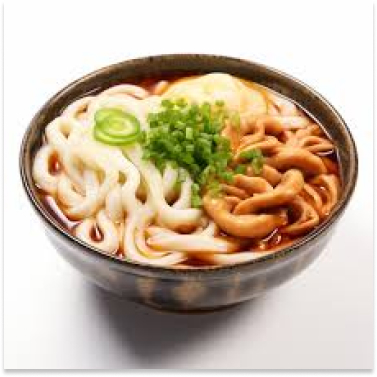
is a thick noodle made from wheat flour, used in Japanese cuisine. There are a variety of ways it is prepared and served. Its simplest form is in a soup as kake udon with a mild broth called kakejiru made from dashi, soy sauce, and mirin.
Name: Udon
Price: 5$
-
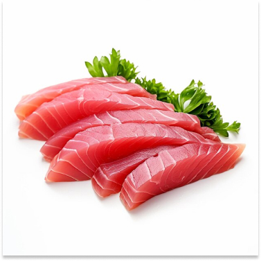
is a Japanese delicacy consisting of fresh raw fish or meat sliced into thin pieces and often eaten with soy sauce.
Name: Sashimi
Price: 12$
-
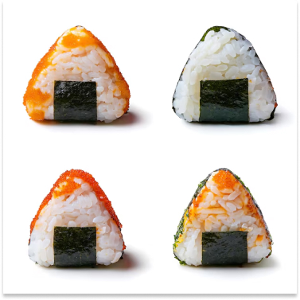
also known as omusubi or nigirimeshi, is a Japanese rice ball made from white rice. It is usually formed into triangular or cylindrical shapes, and wrapped in nori. Onigiri traditionally have sour or salty fillings such as umeboshi, salted salmon, katsuobushi, kombu.
Name: Omigiri
Price: 3$
-
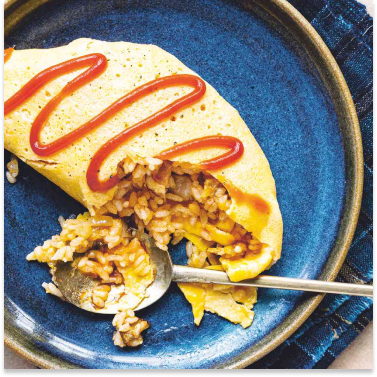
is a Japanese dish consisting of an omelette made with fried rice and thin, fried scrambled eggs, usually topped with ketchup. It is a popular dish also commonly cooked at home.
Name: Omurice
Price: 8$
-
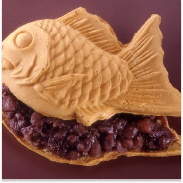
is a Japanese fish-shaped cake, commonly sold as street food. It imitates the shape of tai, which it is named after. The most common filling is red bean paste that is made from sweetened adzuki beans.
Name: Taiyaki
Price: 3$
we also have a special offer. You
can book a set of 10 dishes for up
to 10 people, which immerses you
in Japanese culture and
traditions. The Chef will cook
with you and tell you about the
history and meaning of the dish.
Ideal for a corporate party or
family vacation